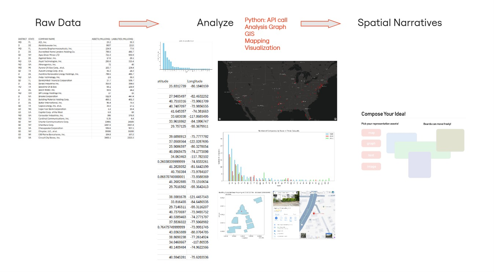
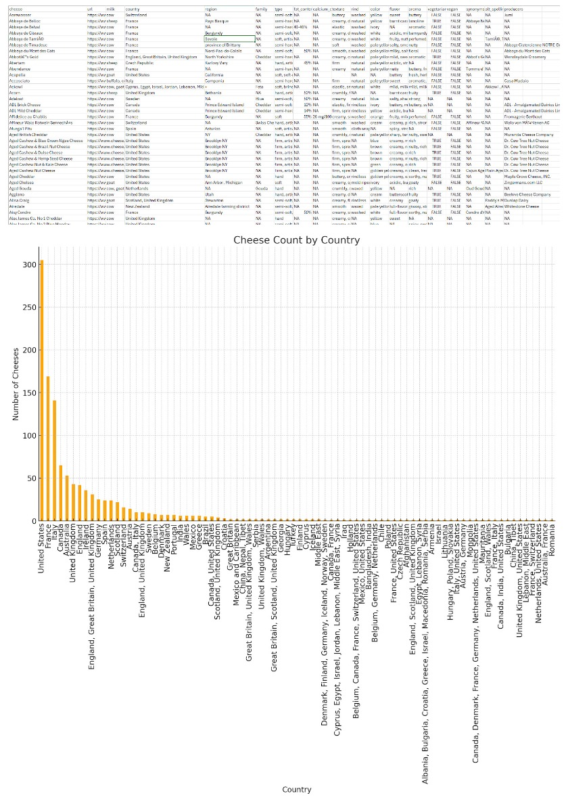

Yuxi Dai
Table of Contents
1 – Manifesto Statement
All Data are Spatial
explores the spatial character in all data and how geospatial context can unlock deeper insights and usability.

What is all data are spatial?
Data is often presented in abstract formats, detached from physical space. However, every data point exists within a spatial context, whether it's the origin of a text, the location of a building, or patterns of traffic flow.
Revealing hidden relationships and enriching their meaning. I want to present the data in spatial formats. This can help users make informed decisions and foster a better understanding of urban dynamics and socio-spatial characteristics.
2 – Examples
From Abstract Data to Spatial Insight
Demonstrate how spatializing data reveals hidden narratives and enriches understanding.
Example 1 - 2009 Bankruptcy Data
Key Insights
Historical Context: The 2009 spike in bankruptcy filings coincides with the global financial crisis
Comparative Analysis: Compared to 2010 and 2011, 2009 saw significantly higher bankruptcy filings, underscoring the immediate aftermath of the 2008 financial crash.
Delaware became a focal point for these bankruotcy fillings. It is known for its favorable corporate laws and tax environment.
Mapping data to specific building footprints uncovered cases like companies that reopened after bankruptcy, providing a nuanced view of resilience and recovery.
Example 2 - World of Cheese

Key Insights
Cheese production is deeply rooted in regional culture, geography, and tradition.
Historical Roots: Cheese-making dates back thousands of years, originating in ancient agricultural societies
Climate and Geography: Diverse landscapes—from rolling pastures to rugged mountains—contribute to the richness of cheese varieties, reflecting local ecosystems and practices.
Immigration to North America: European immigrants brought traditional cheese-making techniques to North America, adapting them to new environments and resources.
Reframe data as a spatial medium
- Data as a medium of spatial insight
- Allow users to engage with all data spatially, making it more intuitive and contextual
- Spatial narratives and context are crucial for understanding data
- Collective Effort (LLM)
3 – Inspirations
References - Influences and Inspirations
Book Reference:
All Data Are Local by Yanni Loukissas
"Data have complex attachment to place, which invisibly structure their form and interpretation." They are tied with the spatial characters. Example: The author provided an example of something he discovered. In one of the largest and most well-documented living collections of trees, vines, and shrubs in the world—Harvard University's Arnold Arboretum—the author came across the record for a cherry tree. The data suggested that the specimen was retrieved by a botanist on an expedition to Japan in 1940. Yet that person had died 13 years earlier, in 1927. How is an outsider supposed to decode this?
Web Reference:
Data Commons, https://datacommons.org/
It is an open knowledge database platform They take a specific stand on the importance of graph integration, emphasizing how visual representation enhances the comprehension and usability of data.
4 – Spatial Data Interface
Prototype
A New Data EXPERIENCE

5 – User Journey Diagram
User Journey
User: General Public User, Research Analyst, Policymaker

6 – Next Steps
Future Development
Thoughts After Review